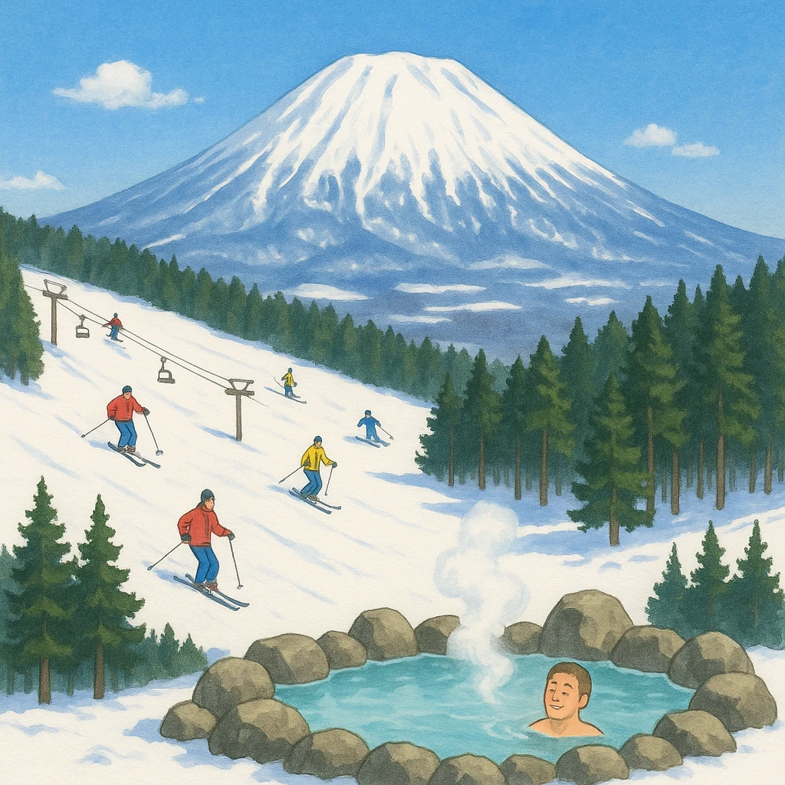

ノート3
北海道の観光産業
自然そのものが
売り物
になる
下地
火山・湖・温泉が多く、冬は各地で
スキー
ができる
流氷やラベンダーなど、季節ごとの見どころも多い
⑮
1987年の
総合保養地域整備法
から
リゾート
開発が盛んに
大きなホテルやスキー場が各地につくられた
⑯
今は
エコツーリズム
が広がっている
地域固有の
自然環境や歴史文化
を観光客に伝え、その価値や大切さを理解してもらい
保全につなげる
仕組み
★ テスト頻出
長い説明文がそのまま出題される。
「伝える → 理解される → 保全につなげる」
の流れで覚える。

第19章 北海道地方
SEED EDUCATION